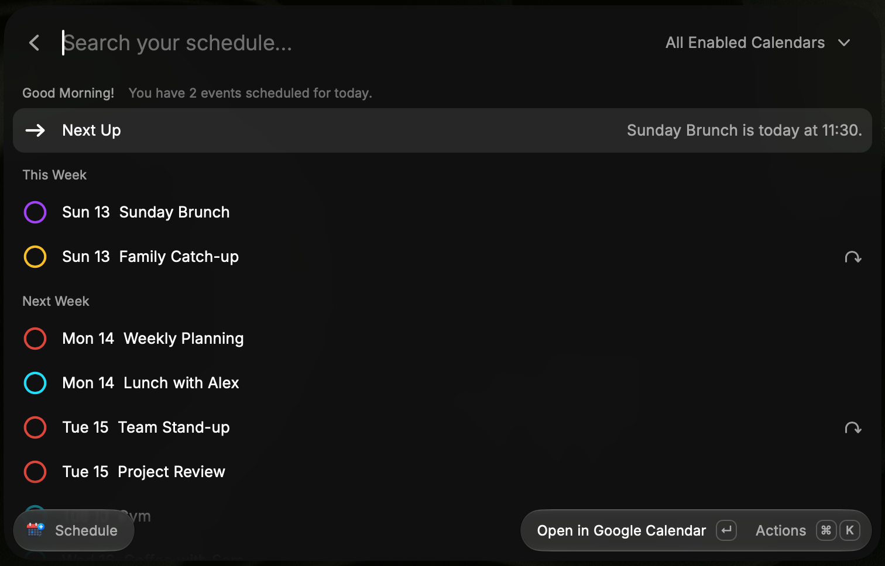

Schedule & menu bar
Browse what’s coming up, see your next meeting and keep a persistent calendar in the menu bar. Smart Status reflects the events you choose to show.
FOR MACOS · PUBLIC BETA
Your schedule, a glance away. DayCal brings Google Calendar into Raycast with a persistent menu bar, quick event creation and account-aware event actions.
Free & open source. Requires Raycast and a Google account.

LESS SWITCHING. MORE DOING.
Browse what’s coming up, see your next meeting and keep a persistent calendar in the menu bar. Smart Status reflects the events you choose to show.
Create events with natural language. Edit, move, copy or delete where supported, and join Google Meet without hunting for a link.
Friday 3pm · 45m @ Office
Choose separate calendar sets for Schedule and the Menu Bar. Map Personal, Work, Shared and Family roles. Switching Google accounts keeps each account’s settings separate.
A DIRECT CONNECTION
DayCal connects directly to Google Calendar through Raycast’s native Google sign-in. Settings and the menu-bar cache stay locally in Raycast. There’s no DayCal backend receiving your calendar data, and no calendar analytics, advertising or tracking.
READY TO TRY IT?
Install from source using the GitHub instructions, then open Schedule or Calendar Menu Bar to sign in and set up your calendars.
Currently in public beta, outside the Raycast Store. Google OAuth verification is complete for DayCal’s requested sensitive Calendar scope. DayCal is the public name; the repository retains its original CalFlow name.